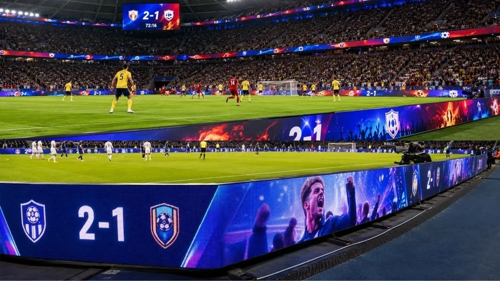
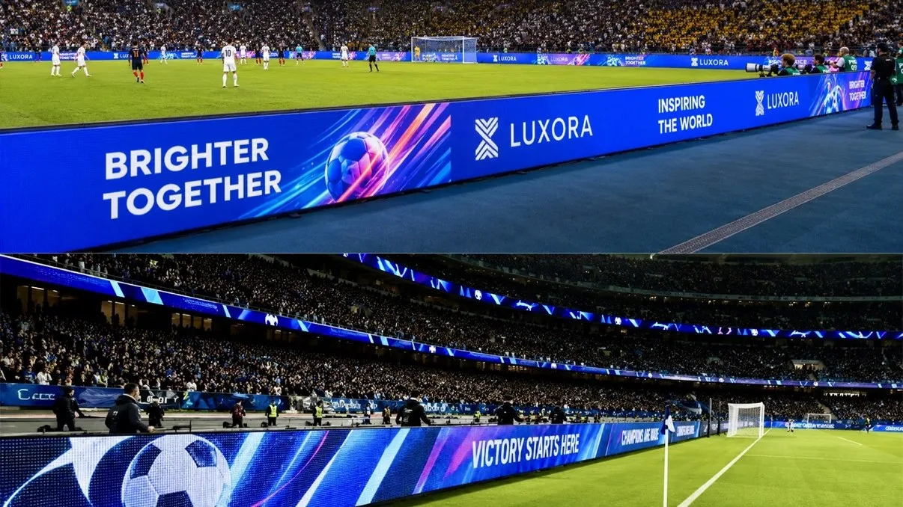
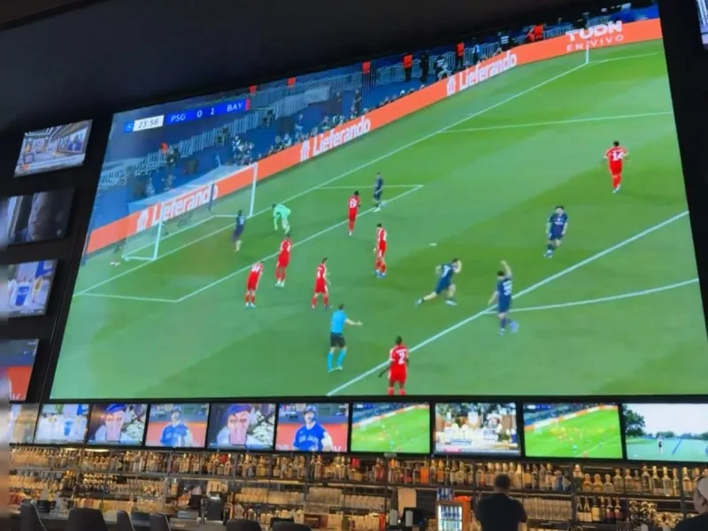

What is a pitch-side LED screen? It is the run of low LED advertising boards placed at ground level around a football pitch, between the touchline and the stands, so sponsor messages sit inside the main broadcast camera shot. The buying decision is less about one screen and more about a system: how many metres of board, at what height and angle, what pixel canvas the controller has to drive, how the boards survive a player sliding into them, and who runs the sponsor schedule on match day.
This guide is for clubs, stadium operators, sports marketing agencies and rental companies that are scoping a pitch-side system or a tournament fleet. It focuses on the RFQ and the system design. For the deeper hardware topics — refresh rate, impact protection, ballast and match-day risk — our stadium perimeter buying guide goes further, and the football stadium LED guide covers the big screens and concourse displays around it.
A pitch-side board earns its money on television and streaming. The most valuable metres are the ones inside the main camera's wide shot, usually the long side opposite the main camera position, followed by the goal ends that appear behind every attacking move. Before counting metres, get the broadcaster's or league's camera plan and mark which runs are on camera for most of the match.
Competition rules decide where boards may stand, how far back from the touchline, how high they can be and what padding they need. Those numbers change by league and season, so ask the competition organiser for the current regulation sheet and design to it rather than to a figure copied from another venue.
Once the runs are known, the system becomes arithmetic. The pixel canvas is the run length divided by the pixel pitch, multiplied by the board height divided by the pitch. That canvas drives the processor, sending-card and content-template choices, so work it out before you compare quotes.
| Typical use (illustrative) | Pitch | Pixels per metre | Horizontal pixels on a 100 m run | Vertical pixels per 1 m of board height |
|---|---|---|---|---|
| Long main run, distant stands | 10 mm | 100 | 10,000 | 100 |
| Main run, tighter camera framing | 8 mm | 125 | 12,500 | 125 |
| Premium run or smaller ground | 6.67 mm | about 150 | about 15,000 | about 150 |
| Training ground, indoor arena, rental fleet | 3.91–4.81 mm | about 208–256 | about 20,800–25,600 | about 208–256 |
The run length and board height above are examples for the arithmetic only; use the venue's drawings. Two practical points follow from the table. First, very wide canvases are often split across several outputs, so the content team needs a template that matches the split exactly. Second, a finer pitch multiplies the pixel count and the processing hardware, so it should be justified by camera framing or by close spectators, not by habit.
For permanent outdoor pitch-side boards, conventional outdoor pitches are the usual fit. Asia Vision's D-PRO outdoor fixed series publishes P5, P5.7, P6.67, P8 and P10 with a 480 × 320 mm die-cast aluminium module, front maintenance, brightness up to 10,000 cd/m², and both common-cathode and common-anode options. Its product page lists sports fields among its applications. For tournament and rental work, the outdoor version of the S Series publishes P2.97, P3.91 and P4.81 on a 500 × 500 / 500 × 1000 mm cabinet platform shared with the indoor version.
Figure 1 shows a double run of pitch-side boards, the layout used where the camera frames both the near touchline and the far side.

A pitch-side board is a cabinet row on a frame, not a wall. The frame sets the tilt toward the main camera, keeps the bottom edge off wet ground and gives the ballast or fixing points. Ask suppliers to quote the frame and the cabinet together and to show:
Player safety is part of the specification, not an accessory. A sealed, flat face is easier to protect than a face of individual lamps. On the published product pages, Asia Vision's COB EF outdoor COB series describes a flip-chip COB face with dustproof, anti-static and anti-collision protection, 3000 cd/m², ≥3840 Hz refresh and ≥10,000:1 contrast. Its P1.5625 and P1.953 pitches are aimed at close viewing such as concourses, hospitality frontages and entrance displays rather than long touchline runs, so treat it as the option for spectator-facing positions at the stadium and confirm any pitch-side use on the quotation.
Every broadcast camera, including super-slow-motion units, sees the boards. Banding, rolling bars and colour shifts on replay are the failures sponsors notice. The D-PRO and S Series pages do not publish a refresh rate, so ask for the refresh rate, grey-scale depth and scan configuration of the exact module on the quotation, and plan a camera test before the first televised match. Our camera flicker guide explains how refresh, shutter angle and scan interact.
Brightness has two jobs: hold contrast in afternoon sun and avoid flaring the camera under floodlights at night. Specify the maximum brightness and the dimming range, and ask how the brightness of a 100-metre run is kept uniform when boards from different production batches are mixed. The sports venue brightness guide covers day-to-night settings.
A pitch-side system sells time. A typical match plays a schedule of sponsor slots, full-run takeovers, goal animations and safety messages. The RFQ should state who operates the system on match day, whether playback is locked to the match clock, and what proof-of-play log the sponsors receive. If the venue also has a center-hung or big screen, decide whether one control room drives both, because that shapes the processor and network design.
Redundancy belongs in the same conversation: a spare sending path, spare boards on site, and a rule for what the run shows if a section fails mid-match. A dark gap in the main run is more visible on television than a slightly dimmer board.
Figure 2 shows match coverage on an indoor LED wall, where the same sponsor content seen pitch-side also reaches hospitality and fan-zone audiences.

Many pitch-side boards never stay in one stadium. Tournaments, cup finals, pre-season tours and multi-sport events use rental fleets that move from venue to venue, and the same cabinets may work a concert stage in the off-season. That changes the specification:
| Question | Permanent club installation | Rental or tournament fleet |
|---|---|---|
| Priority | Weather life, uniformity over seasons, front service | Fast set-up, handling damage, flight cases |
| Typical product direction | Outdoor fixed series such as D-PRO | Rental platform such as S Series outdoor |
| Frame | Fixed or semi-permanent supports | Ground-stack frames with ballast, quick-lock |
| Power | Venue supply planned once | Distro and generator plan for each venue |
| Spares | Season stock held at the venue | Spares travel with the fleet |
For a fleet, the shared indoor/outdoor cabinet platform on the S Series matters because one rigging and spare-parts system can serve sports, stages and church or event work. Confirm which locking and power details differ between indoor and outdoor builds; the product page itself says they can. The outdoor rental guide covers the event-company side.
Weights, power per metre, IP rating and refresh rate are not published for every series, and they should not be assumed from another supplier's sheet. Asia Vision's product pages publish a 3-year warranty and 18-day delivery; everything else above is confirmed on the quotation for the exact module and pitch. Send the venue drawing and the run list through our project enquiry form and we will return a board layout, pixel canvas and itemised quotation.
Planning a pitch-side system or a tournament fleet? Send the venue drawing, the runs you want on camera and the match calendar. We will reply with a board layout, pixel canvas, power plan and quotation. Start a project enquiry.